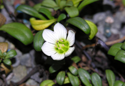
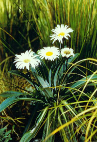

Plants at Fernglen

Gentian saxosa
Fernglen is home to a large variety of New Zealand native plants. The plant pages display a list of plants that can be found growing at Fernglen gardens including the source of the specimens, the year they were obtained and where in the gardens they can be found.

Celmisia Lindsayi
The plants are divided into three pages: